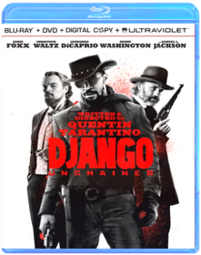
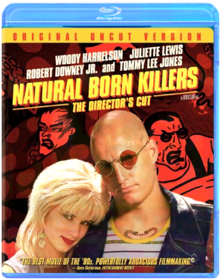
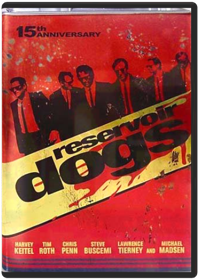
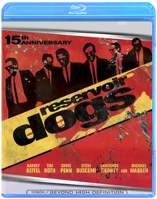

Django Unchained
Quentin TarantinoB005LAIIKISet in the South two years before the Civil War, DJANGO UNCHAINED stars Academy Award ®-winner Jamie Foxx as Django, a slave whose brutal history with his former owners lands him face-to-face with a German-born bounty hunter Dr. King Schultz (Academy Award®-winner Christolph Waltz). Schultz is on the trail of the murderous Brittle brothers, and only Django can lead him to his bounty. The unorthodox Schultz acquires Django with a promise to free him upon the capture of the Brittles – dead or alive.Success leads Schultz to free Django, though the two men choose not to go their separate ways. Instead, Schultz seeks out the South’s most wanted criminals with Django by his side. Honing vital hunting skills, Django remains focused on one goal: finding and rescuing Broomhilda (Kerry Washington), the wife he lost to the slave trade long ago.
Django and Schultz’s search ultimately leads them to Calvin Candie (Academy Award®-nominee Leonardo DiCaprio), the proprietor of “Candyland,” an infamous plantation. Exploring the compound under false pretenses, Django and Schultz rouse the suspicion of Stephen (Academy Award®-nominee Samuel L. Jackson), Candie’s trusted house slave. Their moves are marked, and a treacherous organization closes in on them. If Django and Schultz are to escape with Broomhilda, they must choose between independence and solidarity, between sacrifice and survival…

El Mariachi / Desperado
Robert Rodriguez0767811054Antonio Banderas, Carlos Gallardo, Quentin Tarantino, Cheech Marin. Includes El Mariachi (1993/81 min/Spanish Surround/English subtitles) and Desperado (1995/103 min/English DD 5.1). 2 DVDs. Color/NR/widescreen.
Four Rooms
Quentin Tarantino, Allison Anders, Alexandre Rockwell, Robert Rodriguez6305327041Don't miss the fun in this hilariously sexy comedy that has Antonio Banderas (THE MASK OF ZORRO), Madonna (EVITA), and a sizzling all-star cast checking in for laughs! It's Ted the Bellhop's (Tim Roth — PULP FICTION) first night on the job ... and the hotel's very unusual guests are about to place him in some outrageous predicaments! It seems that this evening's room service is serving up one unbelievable happening ... after another! Also featuring Academy Award(R) winner Marisa Tomei (1992 Best Supporting Actress, MY COUSIN VINNY), FOUR ROOMS is a wild night of highly original comedy entertainment you'll enjoy ... without reservations!
From Dusk Till Dawn
B004SL8LIU
From Dusk Till Dawn 4 Film Collection
B003VS91Z8FROM DUSK TILL DAWNAfter kidnapping a family, the Gecko brothers (George Clooney and Quentin Tarantino) head south to a seedy Mexican bar to hide out in safety. But when they face the bar's notorious clientele, they're forced to team up with their hostages in order to make it out alive.
FULL-TILT BOOGIE
Go behind the scenes of the Robert Rodriguez cult classic, From Dusk Till Dawn, with this brilliant documentary. See just what it's like to be on set with the stars as they bring their characters to life on the big screen.
FROM DUSK TILL DAWN 2: BLOOD MONEY
A gang of misfits heads to Mexico with the blueprints for the perfect heist. But when one of the crooks crosses the wrong vampire, the thieving cohorts develop a thirst for blood to match their hunger for money.
FROM DUSK TILL DAWN 3: THE HANGMAN'S DAUGHTER
Johnny Madrid is on the run from the hangman...with the hangman's daughter Esmeralda by his side. Along with Madrid's gang, Johnny and Esmeralda embark on an adventure that leads them straight into the fight of their lives.

Grindhouse
Quentin Tarantino, Robert RodriguezB003VMFWYITogether for the first time the Rodriguez/Tarantino Double Feature GRINDHOUSE is back and better than ever! These rip-roaring and adrenaline-pumping films are now featured in the original theatrical exhibition format. Loaded with over 2 hours of bonus content, including the fan favorite "Rodriguez's 10 Minute Cooking School", this 2-disc Blu-Ray will deliver a new experience like never before!
Inglourious Basterds
Quentin TarantinoB002T9H2L0Brad Pitt takes no prisoners in Quentin Tarantino’s high-octane WWII revenge fantasy Inglourious Basterds. As war rages in Europe, a Nazi-scalping squad of American soldiers, known to their enemy as “The Basterds,” is on a daring mission to take down the leaders of the Third Reich. Bursting with “action, hair-trigger suspense and a machine-gun spray of killer dialogue” (Peter Travers, Rolling Stone), Inglourious Basterds is “another Tarantino masterpiece” (Jake Hamilton, CBS-TV)!
Jackie Brown
Quentin TarantinoB000068DBDQuentin Tarantino presents the premiere of the JACKIE BROWN COLLECTOR'S SERIES DVD, complete with your favorite award-winning movie, all-star cast, and never-before-seen footage. What do a sexy stewardess (Pam Grier), a street-tough gun runner (Samuel L. Jackson), a lonely bail bondsman (Academy Award®-nominee Robert Forster), a shifty ex-con (Robert DeNiro), an earnest federal agent (Michael Keaton), and a stoned-out beach bunny (Bridget Fonda) have in common? They're six players on the trail of a half million dollars in cash! The only questions are ... who's getting played ... and who's gonna make the big score! Combining an explosive mix of intense action and edgy humor, Tarantino scores again with the entertaining JACKIE BROWN!
Kill Bill: Volume 1
Quentin TarantinoB004SIP8OIThe acclaimed fourth film from groundbreaking writer and director Quentin Tarantino (Pulp Fiction, Jackie Brown), Kill Bill: Vol. 1 stars Uma Thurman (Pulp Fiction), Lucy Liu (Charlie's Angels, Chicago), and Vivica A. Fox (Two Can Play That Game) in an astonishing, action-packed thriller about brutal betrayal and an epic vendetta! Four years after taking a bullet in the head at her own wedding, The Bride (Thurman) emerges from a coma and decides it's time for payback ... with a vengeance! Having been gunned down by her former boss (David Carradine) and his deadly squad of international assassins, it's a kill-or-be-killed fight she didn't start but is determined to finish! Loaded with explosive action and outrageous humor, it's a must-see motion picture event that has critics everywhere raving!
Kill Bill: Volume 2
Quentin TarantinoB004SIP8SYWith this thrilling, must-see movie event, writer and director Quentin Tarantino (Pulp Fiction) completes the action-packed quest for revenge begun by The Bride (Uma Thurman) in Kill Bill: Vol. 1! Having already crossed two names from her Death List, The Bride is back with a vengeance and taking aim at Budd (Michael Madsen) and Elle Driver (Daryl Hannah), the only survivors from the squad of assassins who betrayed her four years earlier. It's all leading up to the ultimate confrontation with Bill (David Carradine), The Bride's former master and the man who ordered her execution! As the acclaimed follow-up to the instant classic Vol. 1 — you know all about the unlimited action and humor, but until you've seen Kill Bill: Vol. 2, you only know half the story!
Natural Born Killers
Oliver StoneB000Q8QHK8The story of a husband and wife who are serial killers involved in a cross country killing spree that elevates them from fugitives into media celebrities.
Natural Born Killers: The Director's Cut
Oliver StoneB002AF4Y96Studio: Warner Home Video Release Date: 08/25/2009 Rating: Nr
Pulp Fiction
Quentin TarantinoB001AQT0Z4“Nothing less than a cultural phenomenon” (Moviemaker Magazine), Quentin Tarantino’s PULP FICTION has been hailed by critics and audiences worldwide as a film that redefined cinema. Tarantino delivers an unforgettable cast of characters – including a pair of low-rent hit men (John Travolta and Samuel L. Jackson), their boss’s sexy wife (Uma Thurman) and a desperate prizefighter (Bruce Willis) – in a wildly entertaining and exhilarating blend of crime-thriller-drama-comedy that is completely original and entirely unforgettable. Nominated for 7 Academy Awards® including Best Picture and Best Director, PULP FICTION packs the punch like an adrenaline shot to the heart.
Reservoir Dogs
Quentin TarantinoB008OKYCNYGas can box with dvd and bonus features inside
Reservoir Dogs
Quentin TarantinoB000KX0ISGA POLICE DETECTIVE IS IN CHARGE OF THE INVESTIGATION OF A BRUTALMURDER, IN WHICH A BEAUTIFUL AND SEDUCTIVE WOMAN COULD BE INVOLVED.